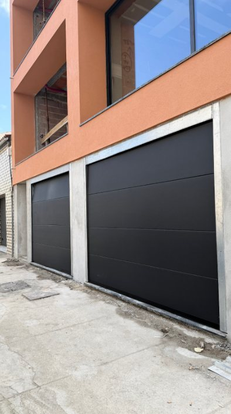
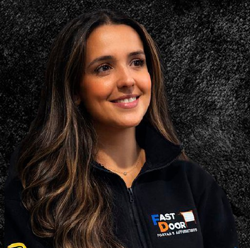

Assistência técnica 24h
Portões que abrem à primeira.
Portões seccionados, portões de alumínio e automatismos para moradias, garagens, acessos industriais e condomínios. Do orçamento à instalação, tratamos de tudo com seriedade e rapidez.
- Segurança e estilo sob medida
- Automatização de portões
- Resposta rápida em avarias

O que fazemos
Do primeiro orçamento à manutenção, tratamos de tudo o que abre, fecha e se automatiza.
-
Portões seccionados
Portões de garagem seccionados, com ou sem porta pedonal, em várias cores e acabamentos.
-
Portões de alumínio
Portões de batente e de correr em alumínio, leves, resistentes e sem manutenção pesada.
-
Automatismos
Motorização de portões novos ou existentes, com motores multimarcas, comandos e sistemas de segurança.
-
Assistência técnica 24h
Diagnóstico rápido e soluções seguras, a qualquer hora. Ninguém merece ficar com o portão avariado.
Trabalhamos para moradias, garagens, acessos industriais e condomínios.
Feito para durar, sem atalhos.
Trabalhamos com foco em segurança, acabamento profissional e soluções duradouras. Cada portão é montado e mantido por técnicos no terreno, sem “desenrascanços” manhosos.
-
Equipa técnica especializada
Montagem e manutenção feitas por técnicos no terreno, do início ao fim do trabalho.
-
Experiência em portões e automatismos
Portões seccionados, alumínio e motores multimarcas. Diagnóstico rápido e soluções seguras.
-
Qualidade que compensa
Materiais e instalação pensados para durar, com segurança, conforto e fiabilidade no dia a dia.
Trabalhos realizados
Alguns portões instalados pela nossa equipa. Toque numa foto para ampliar.
A nossa equipa
As pessoas que atendem o seu contacto e que vão a sua casa tratar do portão.
-

Elisabete Lima
Gestora de redes sociais e comercial
-
Tiago Ferreira
Técnico de instalação e manutenção de portões e automatismos
Portão avariado?
A assistência técnica funciona 24 horas por dia. Envie uma mensagem com uma foto ou vídeo do problema e respondemos o mais rápido possível.
Fale connosco
Escolha a forma mais rápida para si. Respondemos pelo WhatsApp com orçamento sem compromisso.